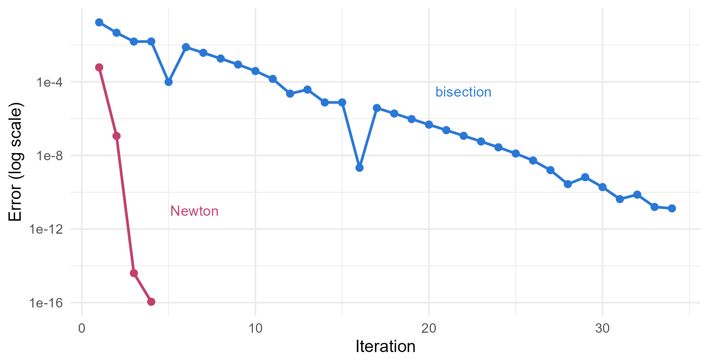
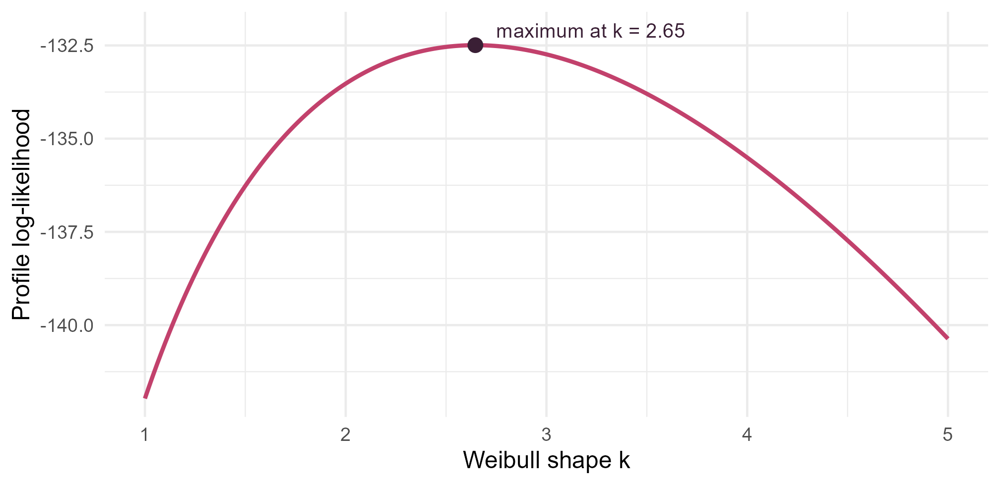

Module 4 · Lesson 8 of 14 Week 68 of 160 About 5–7 hours
Root finding and one-dimensional optimization
Solving equations that have no formula
Solve equations numerically: the Rachford-Rice equation of a flash drum by bisection and by Newton’s method, with their linear and quadratic convergence. Then find the maximum likelihood estimate of a Weibull shape parameter from a seal test, by solving its score equation with uniroot() and by maximizing its profile log-likelihood with golden-section search and optimize(), and see Newton’s method converge to an impossible answer.
Many problems end with an equation that has no formula for its solution. You can write it down, and you can check any proposed answer, but you can’t rearrange it into “x = something”. Maximum likelihood is full of them: the estimate is where the derivative of the log-likelihood is zero, and for most models that equation can’t be solved by algebra. So statisticians solve it numerically, with the algorithms of this lesson and the next.
The first example comes from your separations course. A liquid mixture of three hydrocarbons, a light, a middle and a heavy one, enters a flash drum, where it partly boils. What fraction V of the feed leaves as vapor? With feed mole fractions z_i and equilibrium ratios K_i = y_i/x_i, the answer is the root of the Rachford-Rice equation,
g(V) = \sum_i \frac{z_i (K_i - 1)}{1 + V(K_i - 1)} = 0, \qquad 0 < V < 1.
Here, \mathbf{z} = (0.30, 0.50, 0.20) and \mathbf{K} = (3.2, 0.95, 0.25). There’s no formula for V with three or more components.
Hello, separations class! The equation you solved by trial and error in a spreadsheet is about to get a proper algorithm. And then the very same algorithm finds a maximum likelihood estimate.
In this lesson you’ll:
- solve an equation by bisection, which always works but is slow
- solve it by Newton’s method, which is fast but can fail
- compare their rates of convergence
- find a maximum likelihood estimate by solving its score equation with
uniroot() - maximize a function of one variable with golden-section search and
optimize()
Bisection
g(0) = 0.485 and g(1) = -0.420. The function is continuous and changes sign between 0 and 1, so it must cross zero somewhere in between. Bisection closes in on the crossing:
- Evaluate g at the midpoint of the interval.
- Keep the half where g still changes sign.
- Repeat until the interval is as short as you need.
Each step halves the interval, so after n steps the root is pinned down to within (b - a)/2^n. Bisection never fails, as long as you start with a sign change. But it’s slow: each step gains one binary digit, so 10 decimal digits take 34 steps.
Your turn. The setup code has the Rachford-Rice function rr(). Complete the bisection function: when the midpoint’s sign matches the lower end’s, the root is in the upper half, and otherwise it’s in the lower half.
Otherwise the root is in the lower half, so the midpoint becomes the new upper end, hi.
bisect <- function(g, lo, hi, tol = 1e-10) {
iterations <- 0
while (hi - lo > tol) {
mid <- (lo + hi) / 2
if (sign(g(mid)) == sign(g(lo))) lo <- mid else hi <- mid
iterations <- iterations + 1
}
c(root = (lo + hi) / 2, iterations = iterations)
}
bisect(rr, 0, 1)V = 0.5780: 57.8% of the feed leaves as vapor, after 34 halvings, exactly \lceil \log_2(1/10^{-10}) \rceil. From V, the phase compositions follow: the liquid is x_i = z_i/(1 + V(K_i - 1)), which is 13% light, 51% middle and 35% heavy, and the vapor y_i = K_i x_i is 42% light and only 9% heavy.
Newton’s method
Newton’s method (or Newton-Raphson) uses the slope. At the current guess x_n, replace g by its tangent line, and jump to where the tangent crosses zero:
x_{n+1} = x_n - \frac{g(x_n)}{g'(x_n)} .
Near the root, the tangent is an excellent approximation, and the error is roughly squared at every step: 10^{-2}, then 10^{-4}, then 10^{-8}. That’s quadratic convergence, where the number of correct digits doubles with each step. Bisection’s convergence is linear: a fixed factor, one half, per step.
The price is that Newton’s method needs the derivative, and a starting point close enough to the root. Far from it, the tangent can point anywhere.
Your turn. Run Newton’s method on the Rachford-Rice equation from V = 0.5, and watch the digits. The setup code has the derivative, rr_prime().
Divide by the derivative, rr_prime(V).
V <- 0.5
for (iteration in 1:20) {
step <- rr(V) / rr_prime(V)
V <- V - step
cat(iteration, format(V, digits = 15), "\n")
if (abs(step) < 1e-12) break
}After one step, V = 0.5786, which is 3 correct digits. After two, the error is about 10^{-7}. After three, all 15 digits that a double can show are right. Bisection needed 34 steps for 10 digits. The Rachford-Rice function is smooth and has no turning points between 0 and 1, which is the ideal case for Newton.
Here are the errors of the two methods, step by step:
Vr <- uniroot(rr, c(0, 1), tol = 1e-15)$root
lo <- 0; hi <- 1; err_b <- numeric(34)
for (i in 1:34) {
mid <- (lo + hi) / 2
if (sign(rr(mid)) == sign(rr(lo))) lo <- mid else hi <- mid
err_b[i] <- abs((lo + hi) / 2 - Vr)
}
V <- 0.5; err_n <- numeric(4)
for (i in 1:4) { V <- V - rr(V) / rr_prime(V); err_n[i] <- abs(V - Vr) }
errs <- rbind(data.frame(step = 1:34, error = pmax(err_b, 1e-16), method = "bisection"),
data.frame(step = 1:4, error = pmax(err_n, 1e-16), method = "Newton"))
ggplot(errs, aes(x = step, y = error, color = method)) +
geom_line(linewidth = 0.9) +
geom_point(size = 2) +
annotate("text", x = 22, y = 3e-5, label = "bisection", color = "#2a78d6", size = 3.6) +
annotate("text", x = 6.5, y = 1e-11, label = "Newton", color = "#C2416C", size = 3.6) +
scale_color_manual(values = c(bisection = "#2a78d6", Newton = "#C2416C"), guide = "none") +
scale_y_log10(breaks = 10^c(0, -4, -8, -12, -16), labels = c("1", "1e-4", "1e-8", "1e-12", "1e-16")) +
labs(x = "Iteration", y = "Error (log scale)") +
theme_minimal(base_size = 12)
In practice, use R’s uniroot(). It implements Brent’s method, which combines the safety of bisection with faster steps that need no derivative: it keeps a bracket with a sign change, like bisection, and tries a faster interpolation step whenever that stays inside the bracket.
A maximum likelihood estimate
Now a statistical root. The test rig ran 20 pump seals until they failed:
sort(x)
#> [1] 139.7 147.6 161.8 266.1 279.7 299.6 374.4 419.4 420.6 424.4 439.0 465.4
#> [13] 470.0 538.1 637.1 644.2 646.3 686.5 697.9 745.7Lesson 3 described seal lifetimes with the Weibull distribution. Which shape k and scale \lambda fit these 20 seals best? The maximum likelihood estimates make the observed data as probable as possible. The Weibull log-likelihood is
\ell(k, \lambda) = n \log k - n k \log \lambda + (k - 1) \sum_i \log x_i - \sum_i \left(\frac{x_i}{\lambda}\right)^k .
At the maximum, both partial derivatives are zero. Setting \partial \ell/\partial \lambda = 0 gives \lambda in terms of k: \hat\lambda(k) = \left(\frac{1}{n}\sum x_i^k\right)^{1/k}. Substituting it into \partial \ell / \partial k = 0 leaves one equation in k alone, the score equation:
\frac{1}{k} + \frac{1}{n}\sum_i \log x_i - \frac{\sum_i x_i^k \log x_i}{\sum_i x_i^k} = 0 .
No algebra can solve it for k, but uniroot() can.
Your turn. The setup code has the seal lifetimes as x. Complete the score function, solve it, and compute the scale.
The denominator is \sum x_i^k: sum(x^k).
score <- function(k) 1 / k + mean(log(x)) - sum(x^k * log(x)) / sum(x^k)
k_hat <- uniroot(score, c(0.5, 10), tol = 1e-10)$root
c(shape = k_hat, scale = mean(x^k_hat)^(1 / k_hat))A shape of 2.65 and a scale of 502 hours. The shape is well above 1, so these seals wear out: the longer they’ve run, the more likely they are to fail soon. (The seals were simulated from a shape of 2.3 and a scale of 480, so 20 seals pin the shape down only roughly. Lesson 9 computes its standard error.) Without tol = 1e-10, uniroot() stops at its default tolerance of about 10^{-4}, which gives 2.64587: plenty for the seals, but it’s worth knowing the default.
General-purpose software doesn’t always get this right. MASS::fitdistr() fits distributions by maximizing the likelihood with a general optimizer, and on these data it gives up:
tryCatch(MASS::fitdistr(x, "weibull"), error = function(e) conditionMessage(e))
#> [1] "optimization failed"
MASS::fitdistr(x / 100, "weibull")
#> shape scale
#> 2.6459005 5.0183372
#> (0.4864730) (0.4453867)With the lifetimes in hundreds of hours, it finds the same shape, 2.65, and a scale of 5.02 hundred hours. The optimizer struggles when the two parameters are on very different scales, here 2.6 and 500. That’s one of the lessons of Lesson 9. Solving the one-dimensional score equation sidesteps the problem.
One-dimensional optimization
Instead of solving the score equation, you can maximize the log-likelihood itself. Substituting \hat\lambda(k) into \ell gives the profile log-likelihood of k alone, which the setup code has as loglik_k():
\ell_p(k) = n \log k - n \log\!\left(\frac{1}{n}\sum_i x_i^k\right) + (k-1)\sum_i \log x_i - n.
ks <- seq(1, 5, by = 0.02)
ggplot(data.frame(k = ks, ll = sapply(ks, loglik_k)), aes(x = k, y = ll)) +
geom_line(color = "#C2416C", linewidth = 1) +
annotate("point", x = 2.6459, y = loglik_k(2.6459), color = "#3A1F35", size = 3) +
annotate("text", x = 2.75, y = loglik_k(2.6459) + 0.4, label = "maximum at k = 2.65", hjust = 0, size = 3.6, color = "#3A1F35") +
labs(x = "Weibull shape k", y = "Profile log-likelihood") +
theme_minimal(base_size = 12)
Golden-section search is bisection’s cousin for finding a maximum. Bisection keeps an interval with a sign change. Golden-section search keeps an interval that contains the maximum, and shrinks it by comparing the function at two interior points: if the left point is higher, the maximum can’t be to the right of the right point, so that part is discarded, and vice versa. Each step keeps 61.8% of the interval, the golden ratio’s (\sqrt5 - 1)/2. That choice means one of the two interior points can be reused in the next step (this short version just recomputes both). It works for any function with a single peak in the interval, and needs no derivatives.
Your turn. Complete the golden-section search: when the right point is at least as high, the maximum is to the right of the left point, so the left end moves up to it.
The left end moves up to the left interior point, x1.
golden <- function(f, a, b, tol = 1e-8) {
phi <- (sqrt(5) - 1) / 2 # 0.618...
x1 <- b - phi * (b - a)
x2 <- a + phi * (b - a)
while (b - a > tol) {
if (f(x1) > f(x2)) b <- x2 else a <- x1
x1 <- b - phi * (b - a)
x2 <- a + phi * (b - a)
}
(a + b) / 2
}
golden(loglik_k, 0.5, 10)2.6459, the same as the root of the score equation, as it must be: the maximum of a smooth function is where its derivative is zero. It took 43 steps to shrink the interval from 9.5 to 10^{-8}, because 0.618^{43} \approx 10^{-9}. Like bisection, it converges linearly.
R’s version is optimize(). Like uniroot(), it’s based on Brent’s ideas: golden-section steps, sped up by fitting parabolas through the last three points.
Your turn. Maximize the profile log-likelihood with optimize(). By default it minimizes, so tell it to maximize.
maximum = TRUE.
optimize(loglik_k, interval = c(0.5, 10), maximum = TRUE)The maximum is at 2.6459, where the log-likelihood is −132.49. Without maximum = TRUE, optimize() would search for the lowest point of the curve in the interval, which is at one of its ends. (Another common way is to minimize the negative log-likelihood, which Lesson 9 does.)
Challenge round
Challenge 1 · The Colebrook equation. Another classic from your fluid mechanics course: the Darcy friction factor f for turbulent flow in a rough pipe solves the Colebrook equation,
\frac{1}{\sqrt f} = -2 \log_{10}\!\left(\frac{\varepsilon/D}{3.7} + \frac{2.51}{\text{Re}\,\sqrt f}\right).
Writing u = 1/\sqrt f turns it into u = h(u), so it can be solved by fixed-point iteration: start with a guess, and keep applying h. That converges when |h'(u)| < 1 near the solution, which it is here. Find f for Re = 100,000 and a relative roughness \varepsilon/D = 0.0001.
2.51/(\text{Re}\sqrt f) = 2.51\,u/\text{Re}, so the blank is u.
Re <- 1e5
rel_rough <- 1e-4
u <- 5 # u = 1 / sqrt(f), a first guess
for (i in 1:10) {
u <- -2 * log10(rel_rough / 3.7 + 2.51 * u / Re)
cat(i, format(1 / u^2, digits = 10), "\n")
}
c(friction_factor = 1 / u^2)f = 0.01851, the value you’d read from a Moody chart. The iterations gain about one digit each time: linear convergence, with the error shrinking by a factor of about |h'(u)| \approx 0.1 per step. Explicit approximations, such as the Swamee-Jain formula, give 0.01845, within half a percent.
Challenge 2 · When Newton goes wrong. Newton’s method on the Weibull score equation needs the score’s derivative, which the code below has. Run six Newton steps from a starting shape of 2, and then from 6.
Divide by the derivative, dscore(k).
dscore <- function(k) {
S0 <- sum(x^k); S1 <- sum(x^k * log(x)); S2 <- sum(x^k * log(x)^2)
-1 / k^2 - (S2 * S0 - S1^2) / S0^2
}
newton_path <- function(k) {
path <- k
for (i in 1:6) {
k <- k - score(k) / dscore(k)
path <- c(path, k)
}
path
}
rbind(from_2 = newton_path(2), from_6 = newton_path(6))From 2, Newton reaches 2.6459 in four steps. From 6, its first step jumps to −1.12, and then it converges, quickly and confidently, to −1.82. That is a root of the score function, but a negative shape is meaningless: Newton found a solution of the equation that isn’t a solution of the problem. Far from the root, the score curve is flat, so the tangent line crosses zero far away. Safe practice: start close (from a rough estimate or a plot), keep the parameter in its valid range (Lesson 9 does that by working with \log k), and check the answer, ideally with a method that keeps a bracket, like uniroot().
Quick quiz
1. What does bisection need to get started?
A sign change guarantees a root inside, and bisection never loses it.
2. Bisection starts with an interval of length 1. How long is it after 20 steps?
Each step halves it: linear convergence, one binary digit per step.
3. What is Newton’s update for solving g(x) = 0?
It’s where the tangent line at x crosses zero.
4. Near the root, Newton’s error goes 10^{-2}, 10^{-4}, \dots. What comes next?
Quadratic convergence squares the error, doubling the number of correct digits at each step.
5. Why is the maximum likelihood estimate a root-finding problem?
Solving the score equation and maximizing the log-likelihood give the same answer, as uniroot() and optimize() did.
6. What does golden-section search require of the function on the interval?
With several peaks, it can close in on the wrong one, and no warning is given.
Wrap-up
You can now solve equations that algebra can’t. Here’s what you’ve learned:
- Bisection keeps a bracket with a sign change and halves it each step. It always works and converges linearly: 34 steps for 10 digits of the flash drum’s vapor fraction, 0.578.
- Newton’s method follows the tangent line. It converges quadratically, here to 15 digits in 3 steps, but it needs the derivative and a good start.
uniroot()(Brent’s method) combines both: a safe bracket and fast steps. Remember its default tolerance.- Maximum likelihood leads to score equations. The seal test’s Weibull shape is 2.65, and the scale is 502 hours.
- Golden-section search and
optimize()maximize a function with one peak in an interval, without derivatives, and found the same 2.65. - Check your answers. From a bad start, Newton converged to a negative shape: a root of the equation, but not a solution of the problem.
TipPractice in RStudio (optional, about an hour)
Download seal_test.csv into your project’s data-raw/ folder.
- The secant method. Replace the derivative in Newton’s method by the slope through the last two guesses: x_{n+1} = x_n - g(x_n)(x_n - x_{n-1})/(g(x_n) - g(x_{n-1})). Solve the Rachford-Rice equation from x_0 = 0 and x_1 = 1. How many steps does it need for 12 digits? (Its convergence is “superlinear”, with an order of about 1.6.)
- A dew point. The flash drum is at its dew point when V = 1 and the first drop of liquid forms. Suppose K_i = P_i^{\text{sat}}(T)/P with Antoine equations for each component. Write g(T) = \sum z_i/K_i(T) - 1, and find the dew temperature with
uniroot(). (Look up Antoine constants for propane, n-butane and n-pentane.) - Count the work. Count how many times
uniroot()andoptimize()evaluate their function: wrap it in a function that adds 1 to a counter every time it’s called (use<<-). Compare with your bisection and golden-section codes. - A second peak. Make a function with two peaks, such as
function(x) dnorm(x, 2, 0.5) + 0.8 * dnorm(x, 5, 0.5). Runoptimize()on the interval from 0 to 7, then on 0 to 4 and on 3 to 7. Which peak does it find each time?
NoteKey words from this lesson
- Root finding
- Solving an equation g(x) = 0 numerically.
- Bisection
- A root-finding method that repeatedly halves an interval in which the function changes sign.
- Newton’s method
- A root-finding method that jumps to where the tangent line crosses zero: x_{n+1} = x_n - g(x_n)/g'(x_n).
- Linear and quadratic convergence
- The error shrinks by a constant factor per step (linear), or is roughly squared per step (quadratic).
- Score equation
- The equation that sets the derivative of the log-likelihood to zero. Its root is the maximum likelihood estimate.
- Profile log-likelihood
- The log-likelihood maximized over the other parameters, as a function of one parameter.
- Golden-section search
- A method that finds the maximum of a single-peaked function by shrinking an interval by a factor of 0.618 per step.
- Fixed-point iteration
- Solving u = h(u) by repeatedly applying h. It converges when |h'| < 1 near the solution.
NoteWant to read more?
- Roger Peng, Advanced Statistical Computing, chapter 2, “Solving nonlinear equations”. Bisection, rates of convergence, fixed-point iteration and Newton’s method, including Newton’s method for maximum likelihood.
- R’s help pages for
uniroot()andoptimize(). Their tolerances and their algorithms, with references to Brent’s book. - Geof Givens and Jennifer Hoeting, Computational Statistics (Wiley, 2nd edition, 2013), chapter 2, “Optimization and solving nonlinear equations”. The standard textbook for this course. Not free.